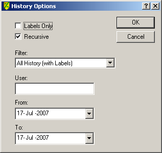
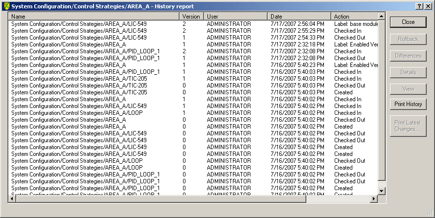

History Report
Use the History Report to create a list of objects filtered by criteria you select. To create a history report, select an object, then select . The History Options dialog opens.
The History Report command opens the following dialog from which you query the configuration database.

The query lets you specify the time interval during which the changes were made as well as the user who made the changes. The options in the Filter drop-down list are:
- All History (with Labels) — Shows the history of the selected item, including labels assigned to the selected object.
- General Activity — The report shows user check ins and check outs, rollbacks, labels, and so on. It does not include upgrade check ins or check outs.
- Upgrade Check In Only — Lists only the item check ins due to a DeltaV upgrade.
You can also specify a recursive query. A recursive query searches the selected item as well as its subordinate items. After you specify options and click the OK button, the report appears, similar to the following.

The buttons on the dialog are:
- Rollback - Replaces the current version of the item in the configuration database with the selected version. Note that Rollback does not affect downloaded modules or physical devices in the field. Rollback only modifies the configuration database. For example, when you roll back to an earlier version of a module, the module does not change the module in its assigned controller. You must download the controller in order for the changes to take effect in the controller. Another example is a situation in which you have commissioned fieldbus device and you roll back to a previous, decommissioned version of the device. The device is not decommissioned by the rollback.
- Differences - Compares the selected version of an item to any other version, or with a version you are currently working on in a DeltaV application. To compare two different versions of an item, hold down the CTRL key while selecting the two versions of interest. Then click the Differences button.
- Details - Displays user and system comments associated with the object.
- View - Opens the item in the VCAT viewer.
- Print History - Prints the history list.
- Print Latest Changes - For every unique selected item (for example, AREA_A and version 4) a difference report is created for that item comparing that version with its previous version (in this case, AREA_A version 3 to version 4 differences).
Sorting the list
You can sort the information in the list by clicking a column header. The sorting behavior for the headers is:
- Name – First click sorts alphabetically. Additional clicking toggles the sort order. If there are multiple instances of the same name, the instances are sorted by Date. The Date sort is always newest to oldest.
- Version – First click sorts by decreasing number (latest version at top). Additional clicking toggles the sort order. If there are multiple instances of the same version number, the instances of each version are sorted by date. The date sort order is the same as the version sort (increasing if version increases and vice-versa).
- User – First click sorts alphabetically. Additional clicking toggles the sort order. If there are multiple instances of the same user, the instances of each user are sorted by by date (most recent first).
- Date – First click sorts from newest to oldest date and time. Additional clicking toggles the sort order. If there are multiple instances of the same date and time, the instances are sorted by Version. The Version sort will be the same sort as the Date (increasing if Date increases, and vise-versa).
- Action – First click sorts alphabetically. Additional clicking toggles the sort order. The label prefix is not used to determine sort order. If there are multiple instances of the same action, the instances are sorted by Date. The Date sort is always newest to oldest.
- Archive Status – First click sorts alphabetically. Additional clicking toggles the sort order. Multiple instances of the same status are not sorted.